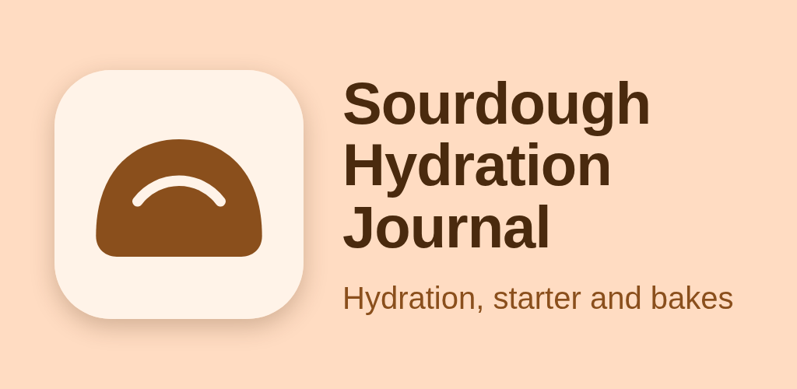
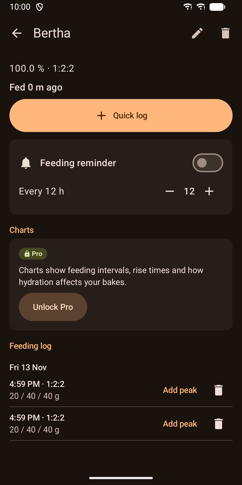
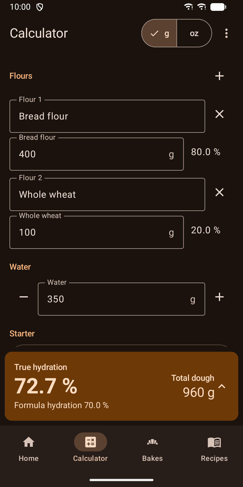
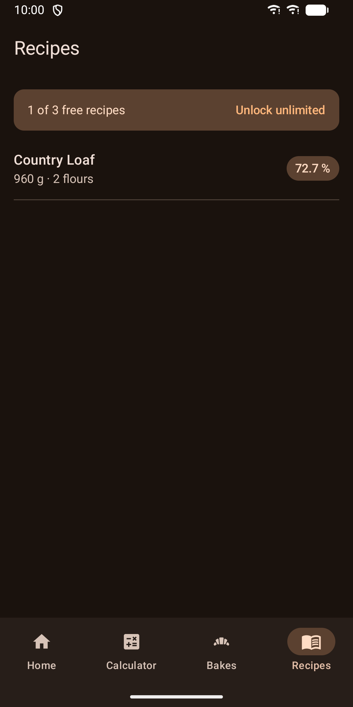
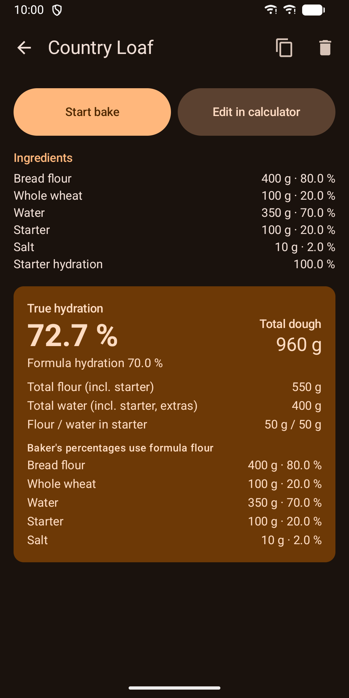
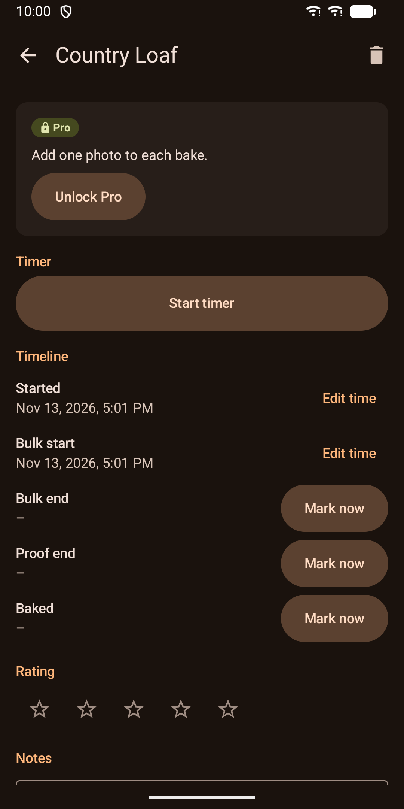
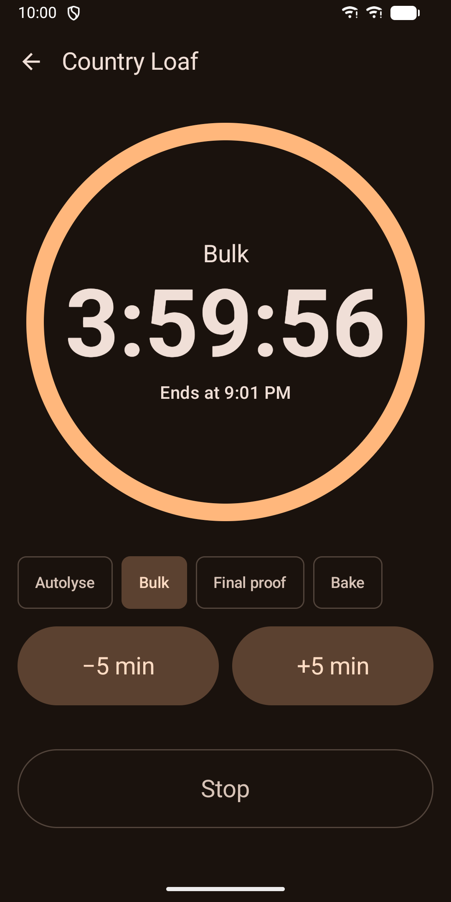
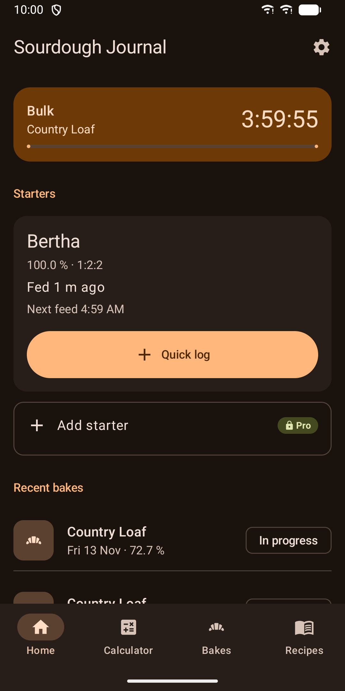

Sourdough Hydration Journal
Baker's percentages, starter feeding log and bake journal for home sourdough.








About
Sourdough Hydration Journal is a kitchen tool for home bakers. It has a baker's percentage calculator, a starter feeding log and a journal for every bake. True hydration Many calculators ignore the flour and water inside the starter. This one counts them. Enter your flours, water, starter, salt and extras. The breakdown shows total dough, total flour, total water, true hydration and formula hydration side by side, plus baker's percentages for each ingredient. Mark an extra such as milk as "counts as water" and the numbers follow. Scaling Scale a recipe to a target dough weight or a target flour weight. Switch between grams and ounces at any time. Starter feeding log Log a feeding with one tap. The app remembers your usual ratio and starter weight. Presets are 1:1:1, 1:2:2 and 1:5:5, or you can set your own ratio. Add a note and the time your starter peaked. Feeding reminders Get a notification when it is time to feed, at the interval you choose for each starter. Bake journal Start a bake from a recipe. The app keeps a copy of the recipe as baked, so later edits do not change your history. Mark bulk, proof and bake times, rate the loaf from 1 to 5 and write notes. Kitchen timer A full-screen timer for autolyse, bulk, final proof and bake. It keeps running when you leave the app and after a restart. Buttons are large for floury hands. Home-screen widget See when the next feeding is due and when the running timer ends. One tap opens the quick log. Made for the kitchen Kitchen mode uses bigger text and keeps the screen on in the calculator and timer. Light and dark themes follow your phone. Phones and tablets are supported, with a two-pane layout on large screens. Screen reader labels are included. The app is available in English and German. Your data There is no account and no tracking. The app does not request the internet permission, and your data stays on your device. Android cloud backup is turned off, so you decide where backups go. You can restore a JSON backup at any time. Pro Some features need Pro, a one-time in-app purchase. Pro includes: - More than one starter - More than three saved recipes - One photo per bake - Charts for feeding intervals, rise times and rating against hydration - Export of a full JSON backup and CSV logs Without Pro you can use the calculator, one starter with its full feeding log, three recipes, any number of bakes, the timer, reminders, the widget and restore from backup.